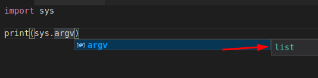
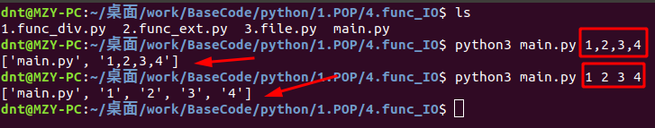

Code：https://github.com/lotapp/BaseCode
多图旧版：https://www.cnblogs.com/dunitian/p/9186561.html
在线编程：https://mybinder.org/v2/gh/lotapp/BaseCode/master
主要是普及一下Python基础语法，对比着Net，新手更容易上手。
对比学习很有意思的，尤其是一些底层和思路
本来感觉函数要说的地方没多少，细细一规划，发现～还是单独拉出一篇说说吧
之后就进入面向对象了，函数还是有必要了解一下的，不然到时候Class里面的方法定义又要说了。
演示的模式一直在变，刚开始让大家熟悉一下 VSCode，后来引入了 ipython3交互式编程的概念
现在就用前几天讲的 Jupyter-Notebook来演示了（VSCode现在也有这个预览版的插件了）
过几天我们会直接 像写文章一般的Coding，一边写文章一边Code，最后还能生成需要的页面
定义一个空函数：（不写pass就报错了）
# 空函数定义
def method():
pass #相当于占位符，ifelse等等里面都是可以出现的
method()
# 定义一个无参函数
def get_name():
print("我叫张三")
# 调用一个无参函数
get_name()
# 定义一个含参数的函数（name和age都是形参）
def show_infos(name,age):
"""打印name和age"""#函数文档说明
print("我叫",name,"我的年龄是",age)#这种输出方式会自动以空格连接字符串
# 调用一个含参数的函数
show_infos("李四",22)#实参
# 定义一个含默认参数(缺省参数)的函数（默认参数必须指向不变对象）
# 比如你设置一个list，改变了内容，则下次调用时，默认参数(缺省参数)的内容就变了，不再是函数定义时的值了
def default_param(name,age=23):
"""age默认为23"""
print("我叫",name,"我的年龄是",age)#这种输出方式会自动以空格连接字符串
# 调用一个默认参数(缺省参数)的函数
default_param("张三")
# 定义有返回值的函数
def div_have_return(a,b):
"""计算a+b，返回计算结果"""#函数文档说明
return a+b
# 调用有返回值的函数
result=div_have_return(1,2)
print("计算结果为",result)
# 定义含有多个返回值的函数（利用了元组）
def div_have_returns(a,b):
"""计算a+b的和，计算a-b，并返回两个结果"""
return (a+b),(a-b)
# 调用含有多个返回值的函数
sum,dvalue=div_have_returns(1,2)
print("sum:",sum,"D-value:",dvalue)
# 测试一下～返回多个值其实是利用了元组
# 多返回值只是一种假象，Python函数返回的仍然是单一值～元组
test=div_have_returns(1,2)
print(test)
# 定义函数时，需要确定函数名和参数个数
# 如果有必要，可以先对参数的数据类型做检查
# 函数体内部可以用return随时返回函数结果
# 函数执行完毕也没有return语句时，自动return None
# 函数可以同时返回多个值，但其实就是一个tuple
# 扩展：使用list实现
# 定义含有多个返回值的函数（利用了元组）
def div_have_returns(a,b):
"""计算a+b的和，计算a-b，并返回两个结果"""
return [a+b,a-b]
# 调用含有多个返回值的函数
div_have_returns(1,2)
######## 通过元组、列表实现 ########
def default_some_params(nums):
"""借助Tuple和list"""
sum=0
for item in nums:
sum+=item
return sum
# 元组传入
default_some_params((1,2,3,4,5))
# 列表传入
default_some_params(list(range(1,6)))
定义一个可变参数的函数(参数名字一般都是*args)
######## 定义一个可变参数的函数(名字一般都是*args) ########
# 定义可变参数和定义一个list或tuple参数相比，仅仅在参数前面加了一个*号。
# 在函数内部，接收到的参数是一个tuple。调用该函数时，可以传入任意个参数（包括0个参数）
def default_params(*args):
"""定义一个可变参数,用来求所有参数的总和"""
sum=0
for item in args:
sum+=item
return sum
# 调用一个可变参数的函数
default_params(1,2,3,4,5)
# 传一个list或者Tuple（参数前面加*）
# 传一个元组
test_tuple=(1,2,3,4,5)
default_params(*test_tuple)
# range(1,6) ==> [1,6) ==> 1,2,3,4,5
test_list=list(range(1,6))
default_params(*test_list)
来个Main传参的扩展，贴两张图即可：
 
定义含关键字参数的函数：def default_kv_params(name,age=23,**kv):
可变参数允许你传入0个或任意个参数，这些可变参数在函数调用时自动组装为一个tuple
关键字参数允许你传入0个或任意个含key-value的参数，自动组装为一个dict
######## 调用含关键字参数的函数 ########
# 可变参数允许你传入0个或任意个参数，这些可变参数在函数调用时自动组装为一个tuple
# 关键字参数允许你传入0个或任意个含key-value的参数，自动组装为一个dict
def default_kv_params(name,age=23,**kv):
"""输出输出用户传参"""
print("我叫",name,"我的年龄是",age,"dict:",kv)
# 调用含关键字参数的函数
default_kv_params("dnt",web="www.baidu.com",qq=110)
来个 综合案例：def default_god_params(name,age=23,*args,**kv):
需要注意py里面的书写格式 ==> 先定义再调用（Code参考）
#### 同时定义可变参数+关键字参数 ####
def default_god_params(name,age=23,*args,**kv):
"""同时有可变参数+关键字参数的使用方法"""
print("我叫",name,"我的年龄是",age,"list:",args,"dict:",kv)
# 调用可变参数+关键字参数
# 有名字给kv,没名字给args
default_god_params("dnt",24,1,2,3,4,5,web="www.baidu.com",qq=110)
#只调用可变参数
default_god_params("dnt",24,1,2,3,4,5)
# 只调用关键字参数
default_god_params("dnt",web="www.baidu.com",qq=110)
#### 传元组和字典 ####
test_tuple=(1,2,3,4,5)
test_dict={"web":"www.baidu.com","qq":110}
default_god_params(*test_tuple,**test_dict)
C#基础语法大家都很熟了，我贴一个注释的Code即可（Code在线）
VSCode里面如果也想像VS一样，///就生成注释 ==》请安装函数文档注释：XML Documentation Comments
using System;
using System.Collections.Generic;
namespace _6func
{
class Program
{
static void Main(string[] args)
{
// 交换两数新方式
int x = 3, y = 5;
(x, y) = (y, x);
System.Console.WriteLine("{0},{1}", x, y);
#region Base
// # 定义一个空函数：
Method();
// # 定义一个无参函数
GetName();
// # 定义一个含参函数
ShowInfos("李四", 22);
// # 定义一个含默认参数(缺省参数)的函数
DefaultParam("张三");
// # 定义有返回值的函数
int result = DivHaveReturn(1, 2);
Console.WriteLine($"计算结果为{result}");
#endregion
// # 定义含有多个返回值的函数（利用了元组）
var (sum, dvalue) = DivHaveReturns(1, 2);
Console.WriteLine($"sum:{sum},D-value:{dvalue}");
// 传多个参数系列：
// 引用传递（通过元组、列表实现）：扩展有可变类型和不可变类型作为形参的对比
var list = new List<int>() { 1, 2, 3, 4, 5 };
Console.WriteLine(DefaultSomeParams(list));
Console.WriteLine(list.Count);//这就是引用传递的证明
// # 定义一个可变参数的函数(参数名字一般都是*args)
Console.WriteLine(DefaultParams(1, 2, 3, 4, 5));
// # 定义含关键字参数的函数 直接传Dict
}
#region base
/// <summary>
/// 定义一个空函数
/// </summary>
private static void Method()
{
}
/// <summary>
/// 定义一个无参函数
/// </summary>
// private static void GetName()
// {
// Console.WriteLine("你好");
// }
//简写
private static void GetName() => Console.WriteLine("你好");
/// <summary>
/// 定义一个含参数的函数
/// </summary>
/// <param name="name">名字</param>
/// <param name="age">年龄</param>
// private static void ShowInfos(string name, int age)
// {
// Console.WriteLine($"我叫{name} 我的年龄是{age}");
// }
//简写
private static void ShowInfos(string name, int age) => Console.WriteLine($"我叫{name} 我的年龄是{age}");
/// <summary>
/// 定义一个含缺省参数的函数
/// </summary>
/// <param name="name">名字</param>
/// <param name="age">年龄默认23</param>
// private static void DefaultParam(string name, int age = 23)
// {
// Console.WriteLine($"我叫{name} 我的年龄是{age}");
// }
//简写
private static void DefaultParam(string name, int age = 23) => Console.WriteLine($"我叫{name} 我的年龄是{age}");
/// <summary>
/// 定义一个有返回值的函数（计算a+b，返回计算结果）
/// </summary>
/// <param name="a">num1</param>
/// <param name="b">num2</param>
// private static int DivHaveReturn(int a, int b)
// {
// return a + b;
// }
//简写
private static int DivHaveReturn(int a, int b) => a + b;
#endregion
/// <summary>
/// 定义含有多个返回值的函数（利用了元组）
/// 计算a+b的和，计算a-b，并返回两个结果
/// </summary>
/// <param name="a"></param>
/// <param name="b"></param>
/// <returns></returns>
// private static (int sum,int dValue) DivHaveReturns(int a, int b)
// {
// return ((a+b),(a-b));
// }
//简写
private static (int sum, int dValue) DivHaveReturns(int a, int b) => ((a + b), (a - b));
#region 传入多个参数系列
/// <summary>
/// 利用列表实现,引用传递之类的C#还有ref和out，这边就不说了
/// </summary>
/// <param name="nums"></param>
/// <returns></returns>
private static int DefaultSomeParams(List<int> numList)
{
int sum = 0;
foreach (var item in numList)
{
sum += item;
}
numList.Clear();
return sum;
}
/// <summary>
/// 定义一个可变参数的函数
/// </summary>
/// <param name="args"></param>
/// <returns></returns>
private static int DefaultParams(params int[] args)
{
int sum = 0;
foreach (var item in args)
{
sum += item;
}
return sum;
}
#endregion
}
}
# 函数递归调用其实就是自己调用自己，关键点只要考虑什么时候跳出即可(没有跳出就是死循环)
# 阶乘案例 n!
def factorial(n):
if n==1:
return n #跳出
elif n>1:
return n*factorial(n-1) #规律公式
print(factorial(4))
print(factorial(-4))
来个案例(实际工作中并不会自己定义,用系统自带strip方法即可)
# 利用切片操作，实现一个trim()函数，去除字符串首尾的空格
# 跳出点==> 第一个字符和最后一个字符不是空格
def my_trim(input_str):
if input_str[0] != " " and input_str[-1] != " ":
return input_str
elif input_str[0]==" ":
return my_trim(input_str[1:])#从第二个到最后一个字符
elif input_str[-1]==" ":
return my_trim(input_str[:-1])#从第一个到倒数第二个(end_index取不到)
print(my_trim("我去 "))
print(my_trim(" 我去"))
print(my_trim(" 我去 "))
C#的递归我就引用一下以前的（Code）
using System;
namespace _10.递归案例
{
class Program
{
//一列数的规则如下: 1、1、2、3、5、8、13、21、34...... 求第30位数是多少， 用递归算法实现
static void Main(string[] args)
{
//1 2 3 4 5 n
//1 1 1+1 2+1 3+2 Fn(n-2)+Fn(n-1)
Console.WriteLine(GetNum(30));
Console.ReadKey();
}
/// <summary>
/// 递归就这么理解，先找能打破重复的条件，然后就不断的重复去吧
/// </summary>
/// <param name="n"></param>
/// <returns></returns>
private static int GetNum(int n)
{
if (n == 1 || n == 2)
{
return 1;
}
else
{
return GetNum(n - 1) + GetNum(n - 2);
}
}
}
}
# Python对匿名函数的支持有限，只有一些简单的情况下可以使用匿名函数
# lambda 参数: 表达式
# 来个简单求和案例:
sum=lambda a,b: a+b
sum(1,2) #调用一下看看(有点js的感觉,函数可以直接赋值给变量,然后直接用)
来个经常用的排序案例：data_list.sort(key=lambda x:x["key"])
还有一个比较常用的地方 == > 当参数传递 def sum(a,b,func): sum(1,2,lambda x,y: x+y)
先看案例：
# 来个实际案例,还记得list的排序吗?
# 这次按照指定key排序(有点 SQL 里面 order by 的感觉)
data_list=[
{"name":"a张三","age":21},
{"name":"b李四","age":23},
{"name":"a王五","age":22}]
# 按照age排序
data_list.sort(key=lambda x:x["age"])
print(data_list)
# 按照name排序
data_list.sort(key=lambda x:x["name"])
print(data_list)
# 可以看看帮助文档
help(data_list.sort)
# 当函数的参数传递(有时候需要传一个匿名方法去函数中处理某些事情)
def sum(a,b,func):
return func(a,b)
sum(1,2,lambda x,y: x+y)
有人可能会说，这个就太简单了，没啥好说的，(⊙o⊙)… Python还真需要说说，来个案例给你猜结果：
# 有人可能会说，这个就太简单了，没啥好说的，(⊙o⊙)… Python还真需要说说
a=100
b=[1,2]
def set_num(num):
num+=num
set_num(a)
set_num(b)
# 发现全局变量a木有被修改，而b修改了
print(a)
print(b)
直接看结果吧：发现全局变量a木有被修改，而b修改了？
啥情况呢？来个简单案例说明下吧～
# 还是来个简单案例说明下吧～
a=100
def set_num(num):
a=200
set_num(a)
print(a)
这是因为，python定义一个变量的写法不用加类型导致的(⊙﹏⊙)
所以函数里面a=200，python解释器就认为 你定义了一个和a这个全局变量名字相同的局部变量
那怎么用呢？global来声明一下全局变量即可：
# a=200，python解释器就认为你定义了一个和a这个全局变量名字相同的局部变量，那怎么用呢？global来声明一下即可
a=100
def set_num(num):
global a
a=200
set_num(a)
print(a)
总结：
在函数中不使用global声明全局变量不能修改全局变量 ==> 本质是不能修改全局变量的指向，即 不能将全局变量指向新的数据
对于 不可变类型的全局变量来说，因其 指向的数据不能修改，所以不使用global时无法修改全局变量
对于 可变类型的全局变量来说，因其 指向的数据可以修改，所以不使用global时也可修改全局变量
有人可能会问了，之前基础部分自增自减说了一下：
Python分为：可变类型：list，dict,set等等 和 不可变类型：int，str，tuple，float等等
后来Dict添加修改又提了一下，还没太清楚怎么办？
不用慌，今天统统解决，先来个案例看看怎么个可变和不可变吧：
a="mmd"
a[0]
# 没法修改
a[0]='d'
a=['m','m','d']
a[0]
a[0]='n'
a
这个直观吧，先这样理解 ==> 可变就是可修改，不可变就是不可修改
其实有个小技巧：看可变不可变就看修改前和修改后的id是否相同，不同就是不可变，相同则是可变
在C#或者其他语言里面int是可以修改的，可能对Python的int是不可变类型有所怀疑，所以我们验证一下
i=1
id(i)
# 地址改变了
i+=1
id(i)
# 地址又变了
i=i+1
id(i)
可以看到执行 i+=1 时，内存地址都会变化，更加证实了int类型是不可变类型
再来个案例
j=1
id(j) # 有没有发现，跟一开始i的内存地址一样了
对于不可变类型int，无论创建多少个不可变类型，只要值相同，都指向同个内存地址
# 更直观的来几个案例
a=1
b=1
c=1
# 不仅仅都一样，还和所有等于1的变量地址都相同
# 这下不怀疑了吧
print(id(a))
print(id(b))
print(id(c))
不怀疑后，再来个拓展 ～ float是否一样呢 ？
来个案例看看
f1=1.2
id(f1)
# 地址变了，说明float也是不可变类型
f1+=1.0
id(f1)
但是下面部分就和int不一样咯～
声明两个相同值的浮点型变量，查看它们的id，发现它们并不是指向同个内存地址(这点和int类型不同)
这方面涉及Python内存管理机制，Python对int类型和较短的字符串进行了缓存，无论声明多少个值相同的变量，实际上都指向同个内存地址
总之知道float也是不可变类型即可
f2=1.2
f3=1.2
print(id(f2))
print(id(f3))
不可变看完了,来看看可变类型：
list1=[12,11,1]
id(list1)
# 改完还是自己原来的地址～说明是可变类型
list1.append(0)
id(list1)
下面验证一下：当存在多个值相同的不可变类型变量时，看看它们是不是跟可变类型一样指向同个内存地址：
结论：当存在多个值相同的不可变类型变量时，并不是指向同一个地址
# 当存在多个值相同的不可变类型变量时，并不是指向同一个地址
list2=[12,11,1]
list3=[12,11,1]
print(id(list2))
print(id(list3))
老规矩，来个扩展：
想同一个地址怎么办？直接赋值即可（注意下面的一种情况）
print(id(list2))
print(id(list3))
list3=list2
print(id(list3)) # 现在list3的地址和list2地址一样了
# 注意这种情况，如果对其中一个list修改，那么另一个也就跟着被修改了
# 任意一个List进行修改，都会影响另外一个List的值
list2.append(0)
print(list2)
print(list3)
print(id(list2))
print(id(list3))
关于可变类型和不可变类型今天就到这吧，下次还会再说更高深的知识点的，尽请期待哦～
下面就进入验证扩展系列，看看一些概念：
1.之前很多资料说python3的匿名函数里不能调用print函数,自己测试下：
# 之前很多资料说py3匿名函数里不能调用print函数,自己测试下
# 定义一个无参匿名函数
printf=lambda:print("I Love You")
printf()
2.可变类型与不可变类型的变量分别作为函数参数的区别
感到疑惑可以看之前的运算符扩展（点我）
上面讲完可变和不可变再看这个就太轻松了～
Python中函数参数都是引用传递
对于不可变类型，因变量不能修改，所以运算不会影响到变量自身
而对于可变类型来说，函数体中的运算有可能会更改传入的参数变量
# 可变类型与不可变类型的变量分别作为函数参数的区别
def default_some_params(nums):
nums+=nums
test_num=1
default_some_params(test_num)
test_num
test_list=list(range(1,6))
default_some_params(test_list)
test_list
3.函数名能不能重复的问题
在C#或者Java之中，能不能重载:具有不同的参数的类型或参数的个数【跟返回值没关系】
结论：函数名不能重名
# 函数名能不能重复的问题（能不能重载：具有不同的参数的类型或参数的个数）
def test():
pass
def test(a,b):
return a+b
test(1,2)
test() #前一个直接被后一个覆盖掉了
4.这次说说两个有趣的扩展
交换两数这个之前就说过了，这边再提一下：
# 交换两数～元组的方式
a=1
b=2
a,b=b,a # 写全：(a,b)=(b,a)
print(a)
print(b)
C#的再回顾一下：
int x = 1, y = 2;
(x, y) = (y, x);
Console.WriteLine("x： " + x + " y： " + x);
5.eval（和js里面的eval差不多）：不太建议使用
# 2.eval（和js里面的eval差不多）：
input_str=input("请输入：")
print(input_str)
eval(input_str)